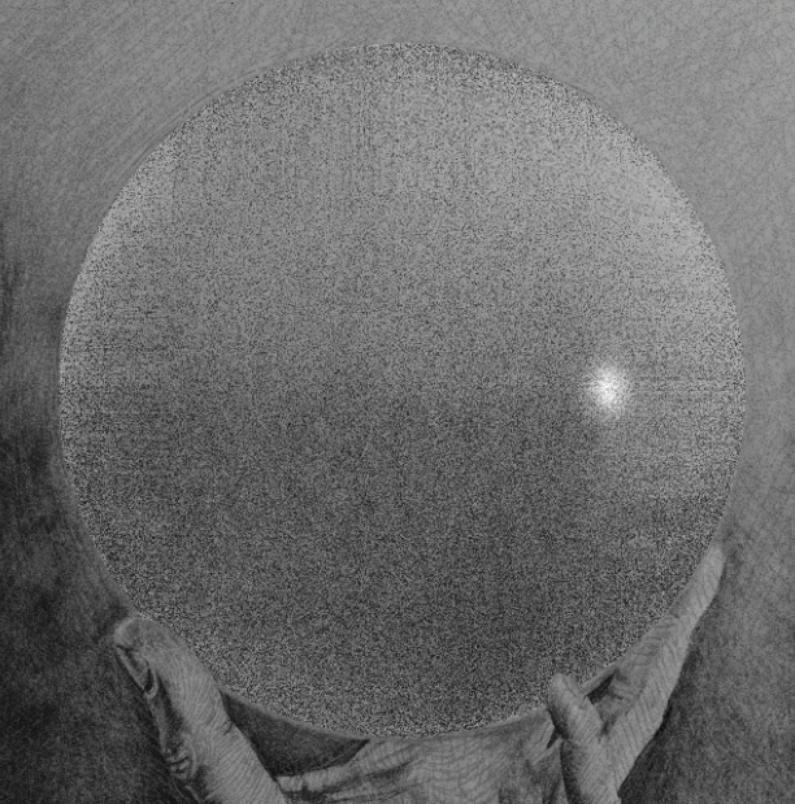
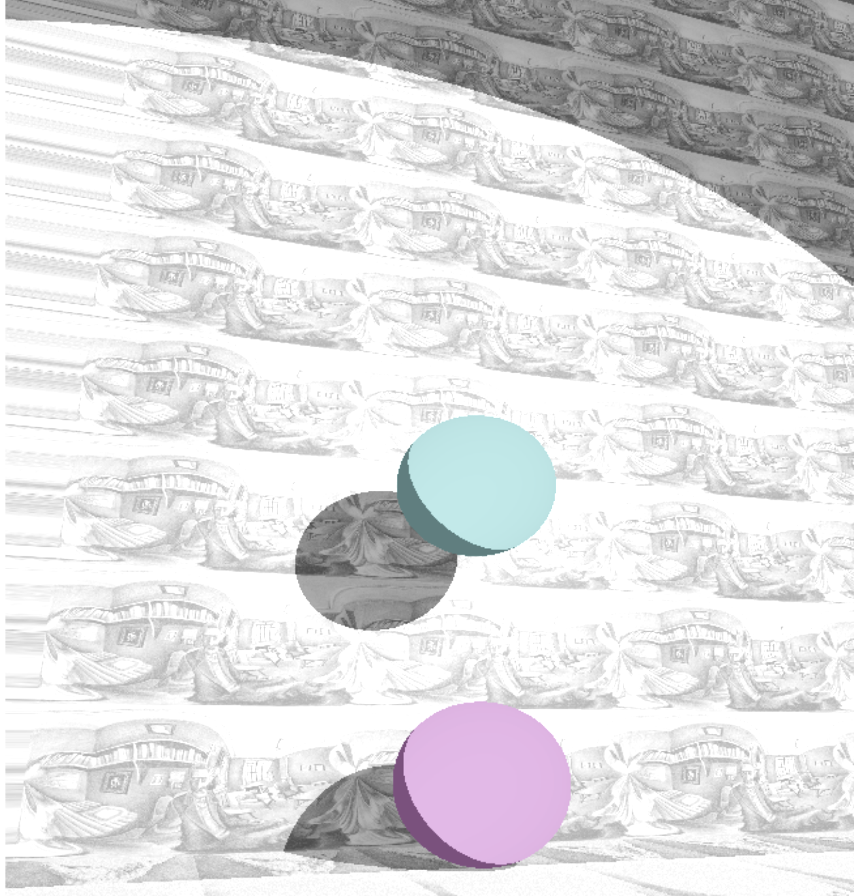

2D Rendering
3D Rendering
Group2
Youli Zhao | Keqiang Yan | Hongye Jin

2D randering for images
Add Time Bar
Add Noise degree bar
Added real version on/off function
Modified the reflect function

3D rendering
Add a plane, a sphere and a cylinder in the space
Add a camera in the space, which can zoom in/out and change its views.
Add Soft Diffuse.
Directional lights
Point lights
Spot light
Soft Shadows with area Lights
Shadow Rendering
Point lights
Spot light
Soft Shadows with area Lights